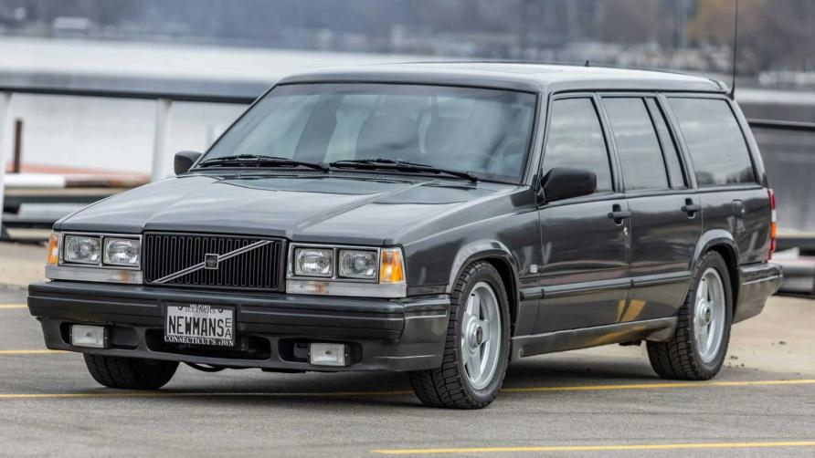
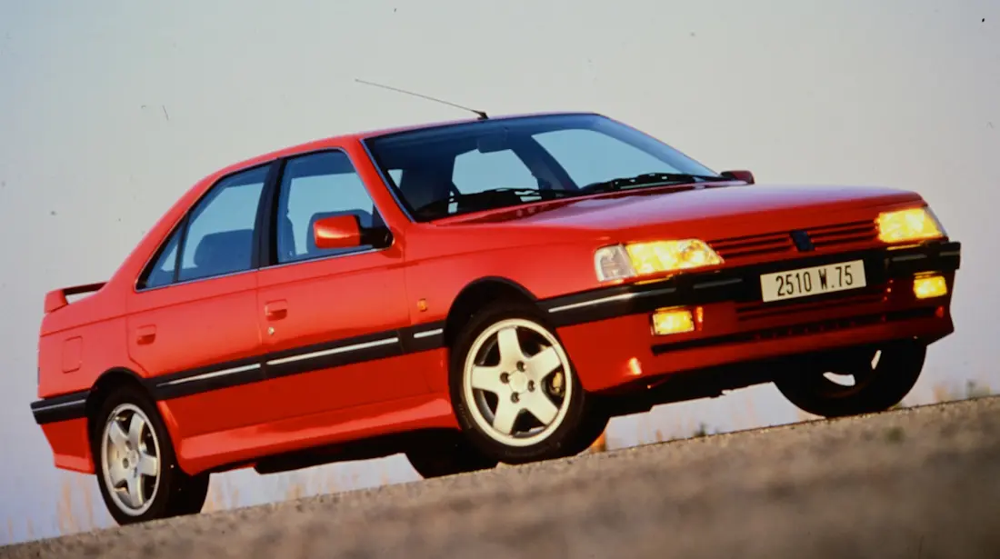
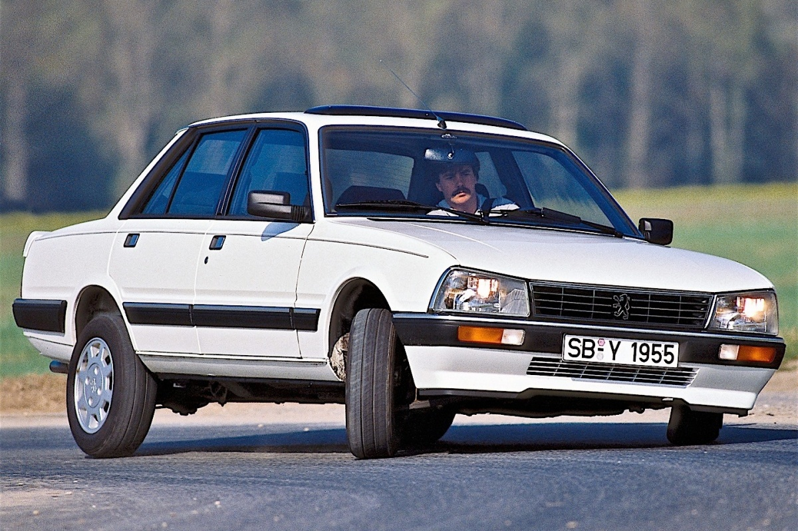
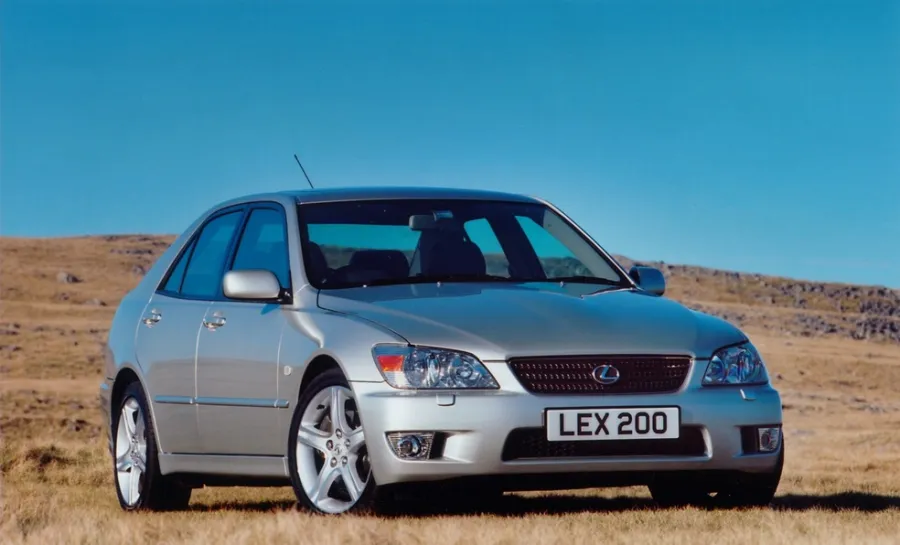

De Visie: "Viral or Wall?"
Ik ben 15 jaar, en ik heb een doel: de drift-wereld betreden als creator en rijder. Geen standaard paden, maar unieke builds en eerlijke content. Van keyboard naar circuit.
Fase 1: Digitaal (Nu - 16 jaar)
Geen budget betekent niet dat ik stilzit. Ik start op keyboard in CarX Drift Racing om de flow en lijnen te leren.
Fase 2: De Unieke Drift Build
Mijn hart ligt bij auto's die niemand verwacht op de track. Dit zijn mijn drie hoofdtargets voor een unieke content-serie:
The Flying Brick (Volvo 740)

Onverwoestbaar, RWD, en ziet eruit als een opa-auto tot de achterkant uitbreekt.
The French Legend (Peugeot 405)

Een prachtige en goedkope hatchback om de journey mee te starten.
The French Legend V2 (Peugeot 505)

Zeldzaam op de drift-track, maar met RWD en karakter. De ultieme onverwachte build.
The Junior 2JZ (Lexus IS200)

Een knipoog naar zijn grote broer (de IS300/Supra). Hoewel de IS200 een 2-liter is, heeft hij diezelfde onverwoestbare Japanse bouwkwaliteit.
Content Strategie
Viral gaan is geen geluk, het is een plan. Ik ga alles documenteren: